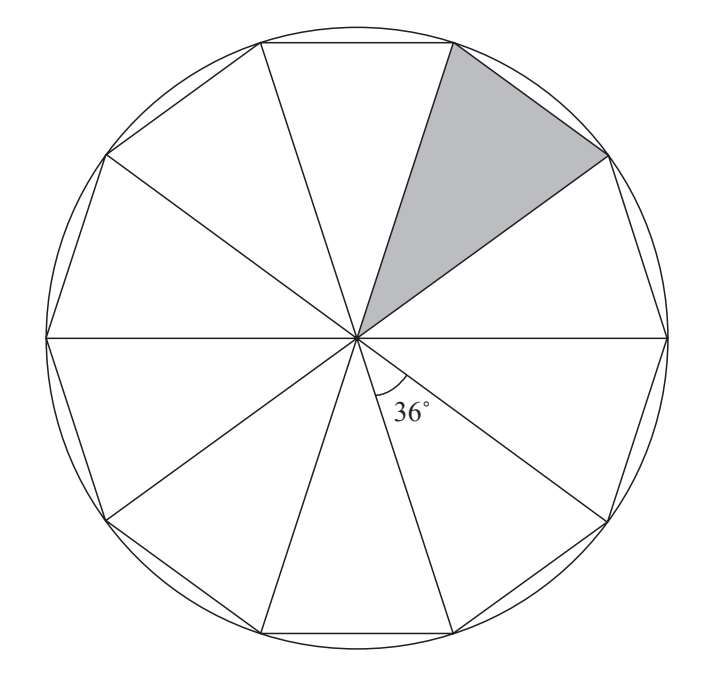
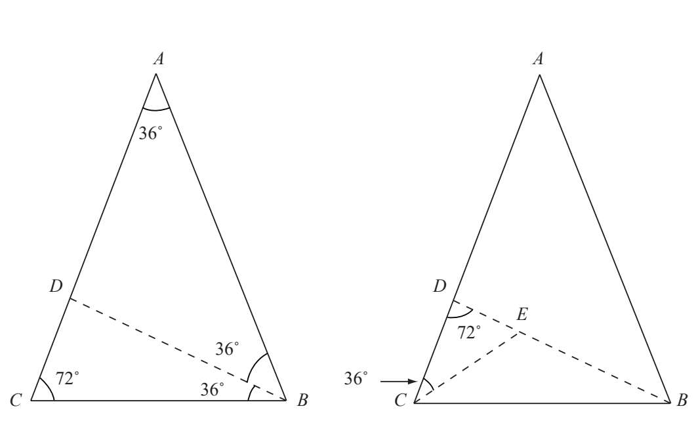
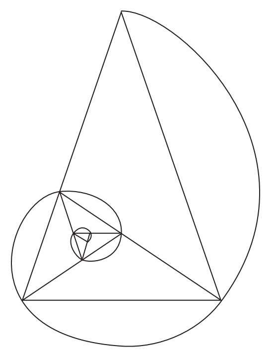

我们刚才已经看到了三种等腰三角形，如果按照内角的度数划分，那么正五边形及其对角线就形成了两种等腰三角形。第一种等腰三角形的三个角分别为36°、36°、108°，而第二种等腰三角形的三个角分别为36°、72°、72°。在这两类等腰三角形中，长边与短边之比为Φ，因此我们将其称为黄金三角形。人们有时会分别赋予它们不同的名称。内角为36°、72°、72°的三角形被称为黄金三角形，而内角为36°、36°、108°的三角形被称为黄金磬折形。
画出正五边形的对角线后，在它的中心就会出现另一个由黄金三角形包围着的正五边形，而且五角星的5个角也是黄金三角形。
有了黄金三角形，我们便可以用尺规作出正五边形。我们首先作一条长为1的线段，再根据黄金比例在该线段上作长为x的线段（前一章中已经讲到），使1/x=Φ。然后我们作边长为x和1的黄金三角形。以该黄金三角形36°角（对边长为x）的顶点为圆心绘制一个半径为1的圆。圆内接正十边形的边长为x。作出这个正十边形后，依次连接两个相间的顶点，这样就得到了一个正五边形。
用同样的方法还可以作出正十边形，古希腊的几何学家就是这样证明了黄金比例在数学上存在的可能性。
根据刚才看到的例子，黄金三角形的各边分别是圆内接正十边形的边和圆的半径：

我们在前一章中讲到了通过黄金矩形作对数螺线，而通过内角为36°、72°、72°的黄金三角形ABC也能作出对数螺线（其中AB/BC=Φ）。如果平分角B，将角B的平分线延伸与AC相交于点D，就能得到三角形DAB和三角形BCD。第一个三角形DAB的内角为36°、36°、108°，因此它是黄金三角形。
第二个三角形BCD与最初的三角形ABC互为相似三角形，因此它也是黄金三角形。如果继续平分角C，就会得到另一个三角形CDE，而它又与前两个三角形相似：

现在是个加深印象的好机会，这个例子又让我们想起了在黄金矩形中，通过去掉正方形不断获得小黄金矩形的过程。在这个例子中，如果我们继续平分72°角，就会在最初的黄金三角形ABC中得到越来越小的黄金三角形。这个过程相当于从黄金三角形中去掉黄金磬折形。我们通过这种方法连续得到黄金三角形，继而能够作出一条不断靠近极点的螺线，这与黄金矩形中的“上帝之眼”（即对数螺线）十分相似。
